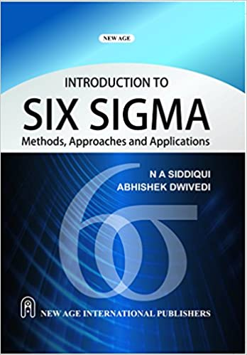
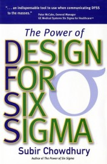
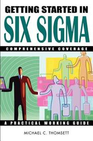
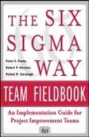
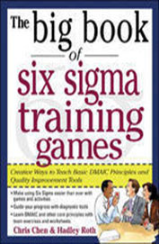
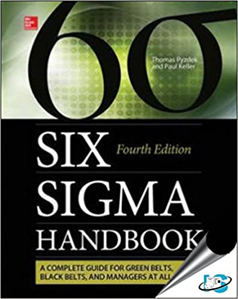
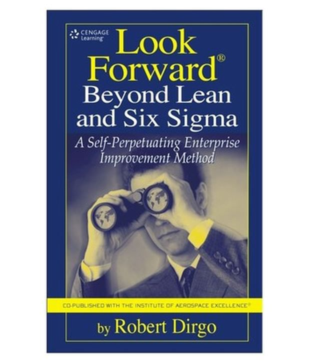

Introduction To Six Sigma
by N A Siddiqui (Author)
₹ 150 BUY NOW
Power Of Design For Six Sigma
by Subir Chowdhury (Author)
₹ 216 BUY NOW
Getting Started In Six Sigma
by Michael C Thomsett (Author),
₹ 1457
BUY NOW
Six Sigma Way Team Field Book
by Peter S Pande, Robert P Neuman, Roland R Cavanagh (Author),
₹ 513
BUY NOW

Big Book Of Six Sigma Training Games : Creative Ways To Teach Basic Dmaic Principles & Quality
by Chris Chen, Hadley Roth (Author)
₹ 150 BUY NOW
SIX SIGMA HANDBOOK
by Pyzdek (Author)
₹ 841 BUY NOW
Look Forward Beyond Lean And Six Sigma : A Self-Perpetuating Enterprise Improvement Method
by Michael C Thomsett (Author),
₹ 1457
BUY NOW
Six Sigma: Black Belt
Nicholas Minshall (Author)
₹ 513
BUY NOW